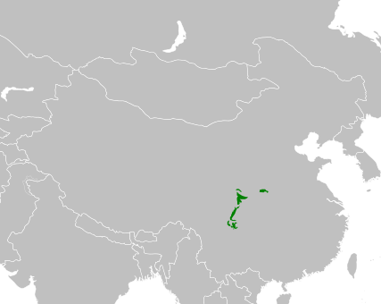

Az óriáspanda elterjedési területe mindössze 5900 km², amely magában foglalja Szecsuan, Kanszu és Sanhszi kínai tartományok hegyvidéki területeit. Az óriáspanda természetes élőhelyei a sűrű erdővel benőtt szubtrópusi hegyoldalak. Itt él nyáron 2700–4000 méter magasságig, télen alacsonyabbra vándorol, gyakran 800 méteres magasságig. Élettere általában nedves és csapadékban gazdag; a nyár hűvös, a tél hideg.
Az óriáspanda elsősorban talajlakó, de jól mászik és úszik. Az óriás panda megroggyantott hátsó lábain is meg tud állni, de hamar elfárad, minden alkalmat kihasznál a pihenésre. Táplálékát legtöbbször ülve fogyasztja el, így mellső mancsa szabaddá válik, hogy a táplálékot megfogja. Ezek az állatok szürkületben vagy éjszaka aktívak, míg nappal fák üregeiben, sziklahasadékokban vagy barlangokban alszanak. A bambuszbozótban alagútszerű járatokat készít, hogy a táplálkozási területét alvóhelyével összekösse. Az óriáspandák egyedül élnek nagyjából 4-6 négyzetkilométer területen. A nőstények territóriumának van egy 30-40 hektáros központi része, amelyről kiűzi a fajtársait. A hímek rugalmasabbak, és nem védik a területüket, nincs semmilyen központi rész, és gyakran közös része is van másik hímekével. Ennek ellenére a fajtársaik többnyire kitérnek az útjukból. Vándorlásuk alatt megjelölik útvonalukat: a fákat megkarmolják, hozzádörgölődnek vagy a vizeletükkel hagynak jelet.
Dús, gyapjas bundájának alapszíne fehér, mellső és hátsó lábai feketék. Mellső lábainak fekete színe a háton is folytatódik, és övet alkot, amely a felsőtestet körbeveszi. Feketék ezenkívül a fülei, a szemének a környéke és néha a farkának a csúcsa is. Feltűnő színének oka pontosan nem ismert. Szóba jöhet az ellenség elijesztése, a hőszabályozás és az álcázás is.

Az óriáspandák azok közé a medvék közé tartoznak, amelyek kifejezetten növényevők, de a közvélekedéssel szemben nem csak bambuszt fogyasztanak. Szabadban ez a fő táplálékuk, a fiatal hajtásokat részesítik előnyben, idősebb hajtásokat csak ritkábban esznek. Mivel a bambusz nem túl tápláló és az óriáspandák emésztése sem állt be úgy a növényevésre, mint a származástanilag régebb óta növényevő emlősöké, sokat esznek belőle: napi szükségletük 10-20 kilogramm bambusz. Tápnövényei között találunk még tárnics-, nőszirom-, sáfrány- és ördögcérnafajokat is. Elvétve fogyasztanak apróbb gerinces állatokat is, mint például kis rágcsálókat, pocoknyúlféléket (Ochotonidae) és halakat is. Az óriáspanda emésztőrendszere alkalmazkodott a túlnyomórészt növényi táplálék emésztéséhez.